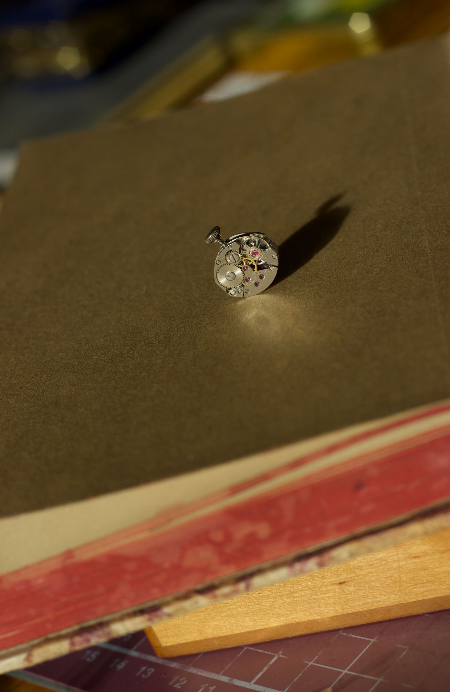

Case book I · book № 0417
The dress watch on its fourth service
1963 hand-wound dress watch, 17 jewels, gold case · owner: one family since new · book opened 2009 · status: in daily wear
The brief
The watch came to the bench in 2009 as an inheritance — a father's dress watch, unworn for a decade, keeping no time worth the name. The family's instruction was the one this atelier hears most: make it right, and keep it right. A book was opened for it, as one is for every watch: № 0417.
The decisions
The first service was a full one, and needed to be — dried oils, a set mainspring, amplitude of 171°. What matters more is what the book did next. It recorded the figures, and so every later visit could be decided against evidence rather than habit: a mainspring-and-seals visit in 2015 when the rate drifted but the amplitude held; a regulation-only visit in 2020, when the timing machine accused nothing and the book said, in writing, wait; and a second full service in 2026, seventeen years after the first, when amplitude finally fell away.
The outcome
Four visits across twenty years: two full services, one partial, one regulation. Total spent across two decades, £1,268 — against the £1,756 the same watch would have cost on a rigid five-year full-service calendar: four full services, whether it needed them or not. The book is not a loyalty scheme. It is a memory, and a memory is what lets a bench decline its own work.
| Entry | Scope | Rate before → after | Amplitude before → after | Charged |
|---|---|---|---|---|
| № 96 · 2009 | Full service | −3 min/day → +4 s/day | 171° → 268° | £439 |
| № 512 · 2015 | Mainspring & seals | +12 s/day → +2 s/day | 238° → 276° | £264 |
| № 803 · 2020 | Regulation only | +3 s/day → +2 s/day | 271° → 271° | £60 |
| № 1,163 · 2026 | Full service | +19 s/day → +2 s/day | 221° → 279° | £439 |
| Twenty years of keeping time | £1,202* | |||
*The four entries sum to £1,202. The family's total of £1,268 adds three insured return postages (£18 each — the watch travelled by post in 2009, 2015 and 2026) and one replacement service book (£12, in 2015, after the original was water-damaged). Each was entered as its own line at the time. The difference is deliberate and visible — a book that only shows round stories is a book that has been tidied, and tidied books lie.
